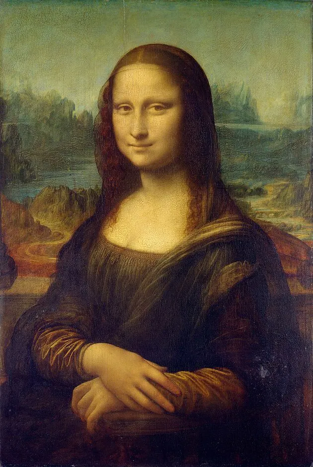
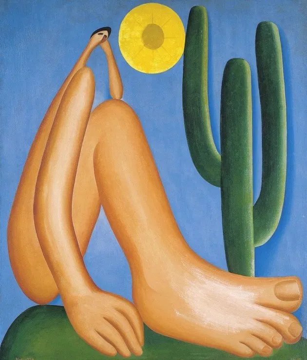
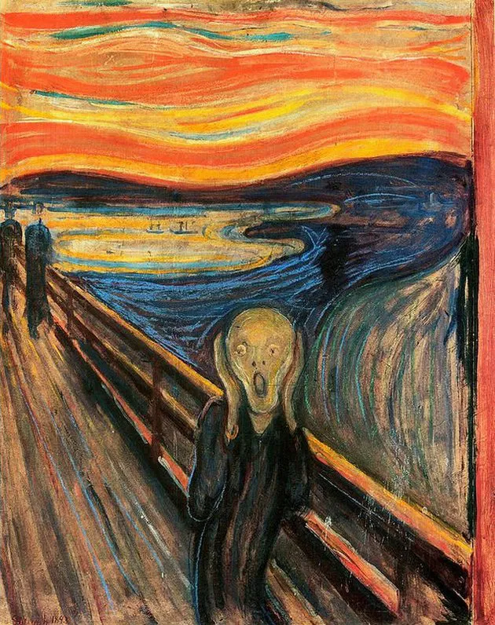
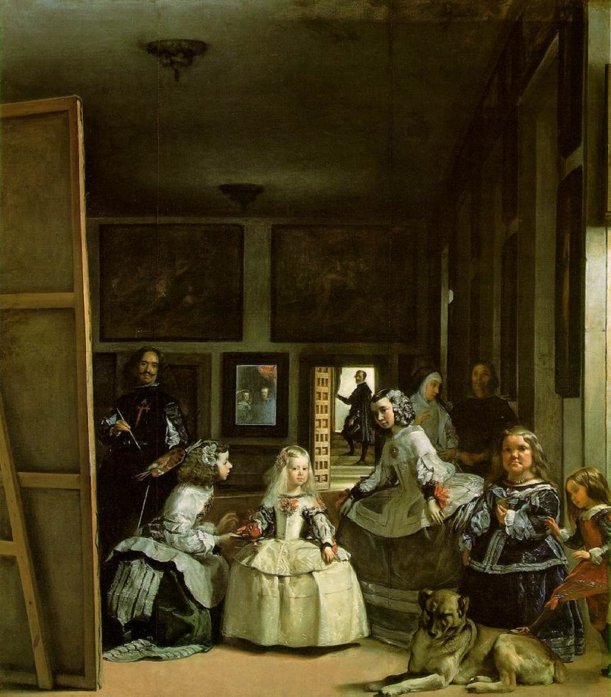

Principais Obras da História
A pintura é uma forma de arte que atravessa séculos, refletindo culturas e emoções. Por meio de cores e técnicas, os artistas expressam ideias e sentimentos. Além disso, ela preserva histórias e continua sendo muito admirada no mundo.
1. A Noite Estrelada - Vincent Van Gogh

A A Noite Estrelada, também chamada de The Starry Night, é uma obra de Vincent van Gogh que retrata um céu noturno cheio de movimento e emoção. Suas formas onduladas e cores intensas criam uma atmosfera quase sonhadora. A pintura expressa os sentimentos do artista e sua visão subjetiva da realidade. Considerada uma das obras mais famosas da arte, continua inspirando interpretações e estudos até hoje.
2. Mona Lisa - Leonardo Da Vinci

A Mona Lisa, também chamada de A Gioconda, é uma obra de Leonardo da Vinci que retrata uma mulher com um sorriso enigmático. Sua expressão misteriosa desperta diferentes interpretações sobre seus sentimentos. Considerada uma das pinturas mais famosas do mundo, a obra inspira estudos e releituras até hoje.
3. Abaporu - Tarsila do Amaral

Abaporu, de Tarsila do Amaral, inspirou a teoria antropofágica de Oswald de Andrade, que valorizava uma arte brasileira com influências europeias. A obra destaca formas exageradas e elementos tropicais.
4. O Grito - Edvard Munch

O Grito, de Edvard Munch, retrata a angústia e a solidão humanas. A obra, ícone do expressionismo, ficou famosa por expressar o desespero de forma intensa e marcante.
5. As Meninas - Diego Velázquez

As Meninas, de Diego Velázquez, retrata uma cena da corte espanhola do século XVII. Apesar de parecer simples, a obra é rica em detalhes e interpretações, sendo uma das mais importantes da história da arte.